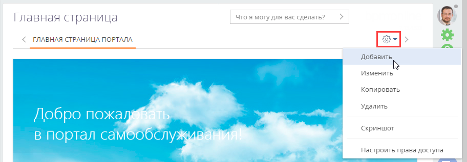
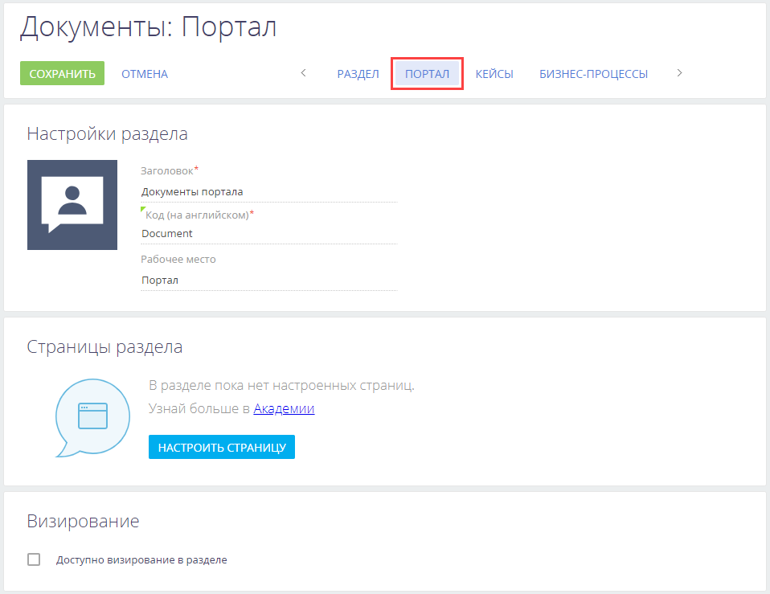
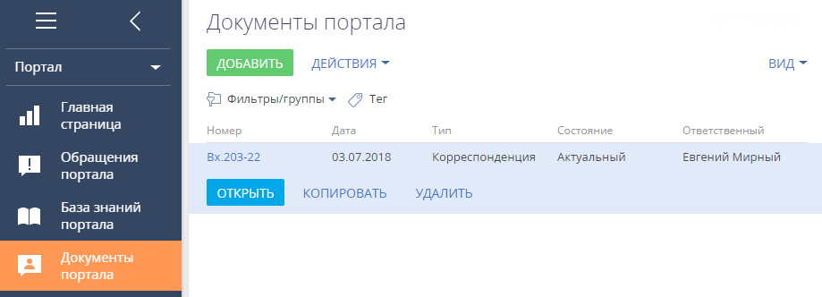
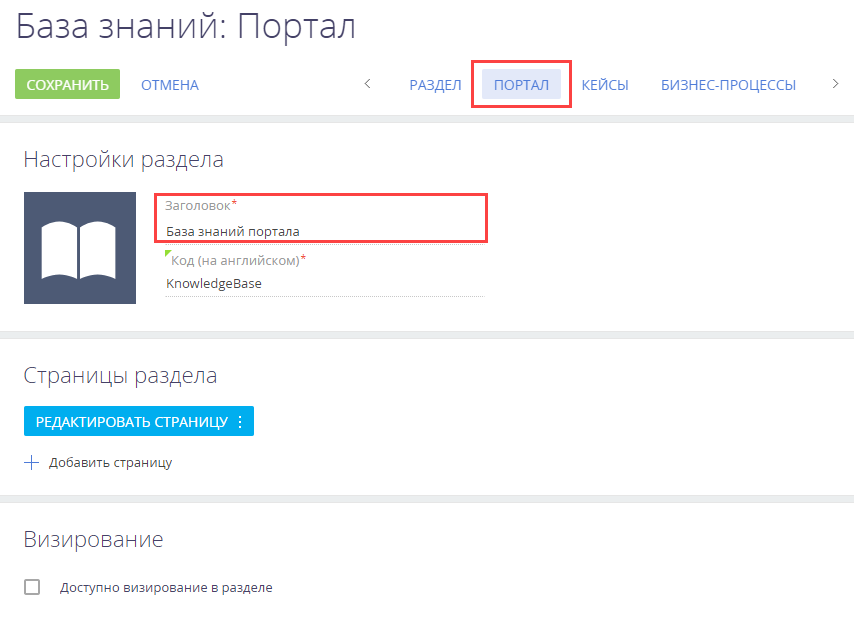
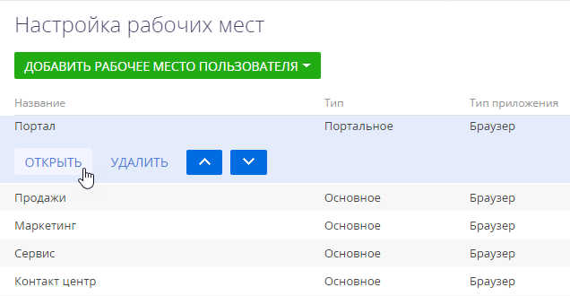

Вы можете настроить страницу входа на портал, главную страницу портала, профили портальных пользователей и организаций, а также добавить на портал существующие и пользовательские разделы.
Настроить страницу входа на портал
Страница входа — это первая страница, которую видят пользователи, переходя по адресу вашего приложения. Вход на портал и вход в основное приложение выполняются на разных страницах. Эти страницы имеют несколько общих настроек.
Например, для приложения с url-адресом https://mysite.сreatio.com адреса страниц входа будут иметь следующий вид:
-
Основное приложение: https://mysite.сreatio.com/Login/NuiLogin.aspx.
-
Портал: https://mysite.сreatio.com/login/SSPLogin.aspx.
По умолчанию https://mysite.creatio.com является основной страницей входа в приложение. Однако вы можете изменить ее на страницу входа на портал.
Для страницы входа на портал рекомендуем вам настроить:
-
Корпоративную символику — эта настройка выполняется отдельно для входа в портал и в основное приложение.
-
Телефоны для связи с поддержкой и ссылки на любые необходимые ресурсы — они одинаково отображаются и на странице входа в основное приложение, и на странице входа в портал.
Изменить страницу входа по умолчанию
Если вы активно используете портал для коммуникаций с клиентами, то можете настроить приложение таким образом, чтобы для всех пользователей при переходе на сайт открывалась страница входа на портал со ссылками для регистрации и восстановления пароля. Такая настройка оптимальна, например, если у вас преимущественно используется самостоятельная регистрация пользователей на портале.
Если вы используете Creatio cloud, то обратитесь в службу технической поддержки для выполнения настройки.
Если вы используете Creatio on-site, то выполните следующие настройки в конфигурационных файлах на сервере приложений:
-
Откройте файл Web.config, размещенный в корневой директории приложения Creatio.
-
Измените значение с NuiLogin.aspx на SSPLogin.aspx. Например:
-
Сохраните изменения.
Настроить логотип на странице входа на портал
Вы можете заменить стандартный логотип на странице входа на портал на логотип вашей компании. Для этого:
-
Нажмите
 → “Системные настройки“.
→ “Системные настройки“. -
Откройте системную настройку “Логотип на странице портального логина” (код “SSPLogoImage”).
-
Удалите стандартный логотип, нажав кнопку Очистить значение.
-
Нажмите кнопку Выбрать файл и загрузите новый логотип. Рекомендуемый размер: 37x274 пикселей. При загрузке логотипа с размером больше рекомендуемого изображение будет масштабировано. Рекомендуемый формат изображений — PNG, могут быть использованы другие стандартные графические форматы, поддерживаемые браузерами.
-
Сохраните изменения.
-
Очистите кэш браузера и обновите страницу, чтобы измененные настройки отобразились в интерфейсе.
Настроить телефоны и ссылки
Вы можете вывести на страницу входа контакты, например, отдела продаж или службы поддержки, и адреса ресурсов, которые востребованы пользователями вашей системы и портала. Эти данные будут отображаться как на странице входа в приложение, так и на странице входа на портал.
Настроить средства связи
Чтобы добавить на страницу входа средства связи:
-
Нажмите
→ “Справочники”. -
Откройте справочник “Средства связи для страницы логина”.
-
Нажмите Добавить.
-
В появившемся окне укажите название средства связи, например “Служба поддержки” и номер телефона.
-
Нажмите ОК.
-
Если необходимо добавить несколько средств связи, то повторите для каждого из них шаги 3–5.
Настроить ссылки
Чтобы добавить на страницу входа ссылки:
-
Нажмите
→ “Справочники”. -
Откройте справочник “Информационные ссылки для страницы логина”.
-
Нажмите Добавить.
-
В появившемся окне укажите название ссылки, например “Официальный сайт” и url-адрес.
-
Нажмите ОК.
-
Если необходимо добавить несколько ссылок, то повторите для каждой из них шаги 3–5.
Если вы не хотите использовать функциональность самостоятельной регистрации пользователей на портале, то можно скрыть ссылку “Зарегистрироваться” на странице входа на портал:
-
для приложений Creatio on-site необходимо в файле Web.config на сервере приложений изменить значение параметра ShowPortalSelfRegistrationLink:
-
для приложений Creatio cloud необходимо обратиться в службу поддержки.
Настроить главную страницу портала
Главная страница портала предназначена для быстрого доступа пользователя портала к наиболее актуальной информации и часто выполняемым действиям. Например, на главной странице можно настроить отображение списка обращений пользователя или виджет для поиска необходимой статьи базы знаний.
В базовой конфигурации главная страница портала Creatio содержит (Рис. 1):
-
баннер-приветствие (1);
-
строку поиска статей в базе знаний (2);
-
список популярных статей базы знаний (3);
-
список обращений пользователя портала (доступен на портале самообслуживания) (4).
По умолчанию главная страница портала открывается сразу после авторизации пользователя. Вы можете изменить настройку таким образом, чтобы после авторизации открывался определенный раздел портала, например, База знаний. Главная страница определяется значением системной настройки “Стартовая страница портала” (код “SSPMainPage”).
Настройка главной страницы портала выполняется администратором в основном приложении.
Чтобы перейти к настройке, нажмите → “Настройка главной страницы портала”.
В результате вы перейдете в раздел настройки главной страницы портала (Рис. 2).
Здесь вы можете настроить:
-
Баннер в вашем корпоративном стиле.
-
Пользовательские списки.
-
Графики и другие аналитические показатели.
При настройке главной страницы необходимо учитывать права доступа пользователей портала к данным. В Creatio права доступа пользователей портала ограничены и подчиняются “принципу наименьшего доступа”, согласно которому пользователю запрещено то, что прямо не разрешено. Если на главную страницу портала вывести данные, на чтение которых у пользователей портала доступа нет, то эти данные не отобразятся на портале. Например, если на главной странице был отображен график, построенный на основании данных из раздела Контакты, то пользователь, у которого нет права на чтение данных объекта “Контакт”, этого графика не увидит.
Таким образом, при настройке главной страницы портала:
-
В первую очередь ориентируйтесь на права доступа, которые предоставлены по умолчанию пользователям портала. Например, вы можете настроить отображение списка статей базы знаний, которые текущий пользователь портала отметил как понравившиеся, и данный список отобразится на главной странице портала.
-
Если вы хотите настроить на главной странице портала итоги по данным, на чтение которых у пользователей портала по умолчанию доступа нет, то настройте соответствующие права доступа пользователям портала. Подробнее: Управление пользователями и правами доступа на портале.
Настроить изображение на главной странице
Вы можете разместить свое изображение на главной странице портала. Это может быть баннер, передающий стиль и дух вашей компании. Баннер настроен в виде отдельной веб-страницы. Чтобы разместить свое изображение, вам необходимо предварительно создать и разместить у себя на сайте веб-страницу, аналогичную той, которая используется в базовой конфигурации портала.
Для этого:
-
Нажмите
→ “Настройка главной страницы портала”. -
Нажмите
 → Изменить.
→ Изменить. -
Дважды кликните по блоку “Веб-страница с картинкой”.
-
На открывшейся странице укажите заголовок, ссылку на веб-страницу с новым баннером и стили (опционально).
-
Сохраните изменения.
Настроить пользовательские виджеты на главной странице
Для удобства пользователей на главной странице портала отображаются списки их записей в основных разделах портала. На клиентском портале это список популярных статей базы знаний, а на портале самообслуживания — статьи базы знаний и обращения пользователя. Эти списки настроены средствами разработки при помощи блока итогов “Виджет”. Кроме того, вы можете добавлять пользовательские списки с собственной сортировкой, например, список запросов пользователей. Однако в таких списках не будет кнопки Перейти. Такие списки настраиваются аналогично блокам итогов “Список” в основном приложении. Подробнее: Настроить дашборды.
Настроить вкладки главной страницы
На главной странице вы можете настроить отдельные вкладки для отображения аналитических данных, например, статистики по обращениям пользователя портала (Рис. 3).
Чтобы добавить новую вкладку на главную страницу портала:
-
Нажмите
→ “Настройка главной страницы портала”. -
Нажмите
→ Добавить (Рис. 4).Рис. 4— Добавление новой вкладки на главную страницу портала -
Настройте содержимое вкладки аналогично настройке панелей итогов аналитики. Подробнее: Настроить дашборды.
В результате выполненных настроек при входе на портал в верхней части главной страницы отобразятся все настроенные вкладки. Перемещаться по вкладкам главной страницы можно по клику на их заголовки.
Обратите внимание, если дополнительные вкладки главной страницы не настроены, то при входе на портал область настройки вкладок не отображается.
Настроить профиль пользователя и организации
Вы можете добавлять уже существующие поля и детали или создавать новые, настраивая профили пользователя портала и организации в мастере разделов. Количество полей и деталей, которые можно отобразить на странице, не ограничено.
Настройки могут выполнять пользователи системы с доступом на выполнение системной операции “Доступ к рабочему месту “Администрирование” (код “CanManageAdministration”).
Настроить профиль пользователя
-
Нажмите
 → “Настройка страницы профиля пользователя портала”.
→ “Настройка страницы профиля пользователя портала”. -
Добавьте новые или уберите поля и детали в мастере разделов (Рис. 5).
-
Сохраните изменения.
Настроить профиль организации
-
Нажмите
→ “Настройка страницы профиля организации”. -
Добавьте новые или уберите поля и детали в мастере разделов (Рис. 6).
-
Сохраните изменения.
Настроить разделы портала
Вы можете управлять разделами портала, настраивая их в мастере разделов основного приложения. В зависимости от конфигурации портала возможности управления разделами различаются:
-
На портале самообслуживания добавление пользовательских разделов недоступно, при этом есть возможность изменить настройки существующих разделов.
-
На клиентском портале можно добавить до трех новых пользовательских разделов и настроить их с помощью мастера разделов.
На страницу раздела можно добавить любые объекты системы, например, детали, поля и т. д. Количество объектов зависит от конфигурации портала (портал самообслуживания, клиентский портал) и регулируется условиями лицензии. Например, на портале самообслуживания можно добавить на страницу не больше 300 объектов, на пользовательском портале — не больше 1500, на партнерском портале — не больше 3000. При превышении количества объектов, используемых на странице записи раздела, на портале блокируется возможность добавления и редактирования записей.
Добавить существующий раздел
Возможность отобразить на портале существующие разделы системы и их количество регулируются условиями лицензии пользователя.
Чтобы добавить существующий раздел системы на портал:
-
Нажмите
→ “Настройка внешнего вида”→ “Настройка рабочих мест”. - Выберите нужное рабочее место с типом “Портальное” из списка → Открыть.
-
На детали Разделы нажмите
 → клик по названию раздела, который хотите отобразить на портале → Выбрать .
→ клик по названию раздела, который хотите отобразить на портале → Выбрать .
В результате откроется мастер раздела с вкладкой Портал, где выполняется настройка свойств раздела (Рис. 7).Рис. 7 — Стартовая страница мастера раздела для добавления раздела на порталВ результате откроется мастер раздела с вкладкой Портал, где выполняется настройка свойств раздела:
-
Поле Заголовок автоматически заполнится названием раздела, которое будут видеть пользователи портала. При необходимости название можно отредактировать.
-
Поле Код на английском будет заполнено автоматически и недоступно для редактирования. В нем указывается название раздела, которое используется разработчиками для работы с разделом в программном коде Creatio.
-
Вы можете изменить стандартную иконку раздела, которая будет отображаться в боковой панели портала. Наведите на иконку курсор мыши, нажмите
 , загрузите новое изображение. Иконка должна быть белой с прозрачным фоном. Формат иконки: PNG или SVG, размер: 38x38 px.
, загрузите новое изображение. Иконка должна быть белой с прозрачным фоном. Формат иконки: PNG или SVG, размер: 38x38 px. -
По кнопке Настроить страницу откроется незаполненная базовая страница редактирования. Настройка выполняется аналогично странице раздела основного приложения. Подробнее: Настройка страниц.
-
Установите признак Доступно визирование в разделе, если необходимо, чтобы в разделе была возможность работы с визами и уведомлениями по визам.
-
-
Сохраните изменения в мастере раздела.
В результате настроек выбранный раздел основного приложения будет добавлен в указанное портальное рабочее место (Рис. 8).
Рис. 8 — Раздел Документы на портале
Добавить новый раздел
Добавление новых пользовательских разделов доступно пользователям клиентского и партнерского порталов.
Чтобы добавить на портал пользовательский раздел:
- Создайте и настройте новый раздел в мастере разделов основного приложения. Подробнее: Добавить новый раздел.
При указании основных свойств раздела в поле Рабочее место укажите любое рабочее место основного приложения, например, “Основное” (Рис. 10). -
Нажмите
→ “Настройка внешнего вида” → “Настройка рабочих мест”. -
Выберите нужное рабочее место с типом “Портальное” из списка → Открыть.
-
Добавьте созданный раздел в рабочее место “Портал”.
-
Сохраните изменения в мастере раздела.
В результате настроек новый пользовательский раздел, созданный в основном приложении, будет доступен на портале.
Изменить настройки существующего раздела
При работе с разделом на портале может потребоваться изменить набор полей или деталей на странице записи. Для этого необходимо отредактировать страницу раздела на портале. Рассмотрим пример добавления двух новых полей на страницу.
-
Нажмите
→ “Настройка внешнего вида” → “Настройка рабочих мест”. -
Выберите рабочее место с типом “Портальное”, содержащее нужный раздел, из списка → Открыть.
-
Кликните по названию нужного раздела, например, База знаний → Мастер раздела.
Откроется мастер раздела с вкладкой Портал, где можно настроить свойства выбранного раздела.
Рис. 10 — Мастер раздела База знаний портала -
Нажмите Редактировать страницу. Откроется дизайнер страницы раздела на портале.
-
Выполните необходимые изменения на странице, например, добавьте на нее новые поля (Рис. 11). Подробнее: Настроить поля страницы.
-
Сохраните изменения в мастере раздела.
В результате настроек на странице записи выбранного раздела портала появятся новые поля (Рис. 12).
Настроить рабочие места портала
Чтобы перейти к настройке разделов, которые будут отображены на портальных рабочих
местах, выполните следующие действия:
-
Нажмите
→ “Настройка внешнего вида”→ “Настройка рабочих мест”. -
Выберите нужное рабочее место с типом “Портальное” из списка → Открыть (Рис. 13).
Рис. 13 — Переход к настройке портального рабочего места
В результате действия откроется страница настройки портального рабочего места. Дальнейшие действия различаются в зависимости от того, что необходимо сделать: добавить существующий раздел системы на портал, создать и добавить новый пользовательский раздел или отредактировать существующий раздел портала.